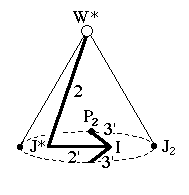
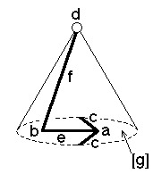

216
216
 218
218 Orbifold Atlas Home Page
Orbifold Atlas Home Page
 Crystallographic Topology Home Page
Crystallographic Topology Home Page
Underlying Topological Space: RP2 cone on D3; Figure Pseudo-Symmetry (FPS): m
Euclidean 3-Orbifold with Invariant-Lattice-Complex Letters
(left), Wyckoff Site Letters (right)
 
| FPS | Mult | Lattice Comp | Group Graph | Wyckoff Set | 2[4]Cover |
| 2-1 | I | 3'3'2' | a | ||
| 6-1 | J* | 22' | b | ||
| 8-1 | I4[P2]& | 2'<3'>& | c:a-a | ||
| 12-1 | W* | 20 | d | ||
| 12-1 | I6[-]J*2 | 2<2'>3'3' | e:a-b | ||
| 24-1 | J*4[-]W*2 | 2'<2>0 | f:b-d | ||
| 24-1 | m | g:ec | |||
| 48 | 1 | h:f,g | |||
| 24-1 | I12[J2]J*4 | 2*=3'3'2'<1'>22' | g1:a-b | #229(h) | |
| 48-1 | P26[-]W*4 | 2*=3'3'<1>20 | h1:c-d | #229(i) | |
| m | 48-1 | m* | h2:eg1f | #229(j) | |
| Struct-Mult | Critical Points | Heegaard Surf | Wyckoff Cut |
| BCC -1 | I/P2/W*/J* | HP2 2'0m{1} | e |
216
218
Orbifold Atlas Home Page
Crystallographic Topology Home Page
Page last revised: